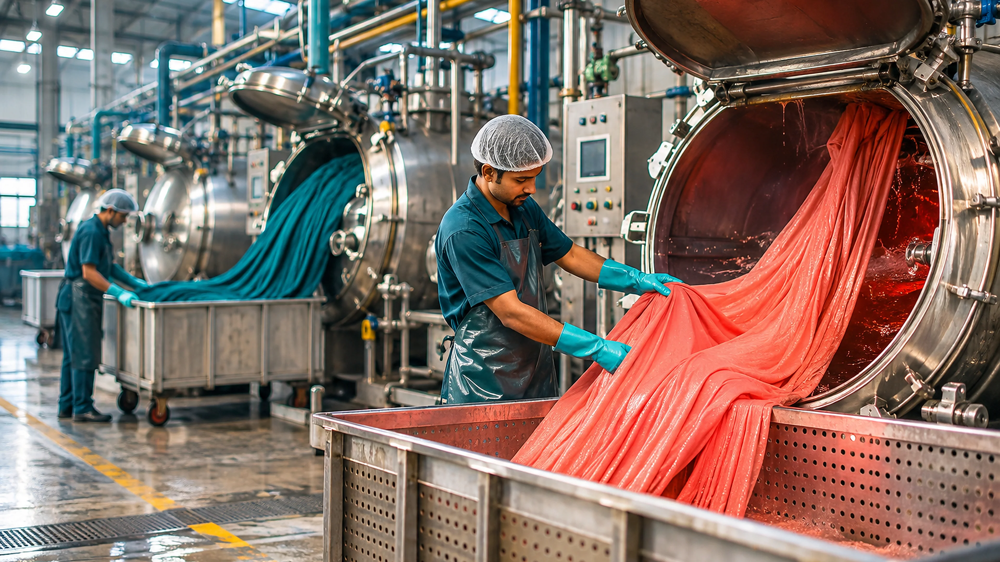
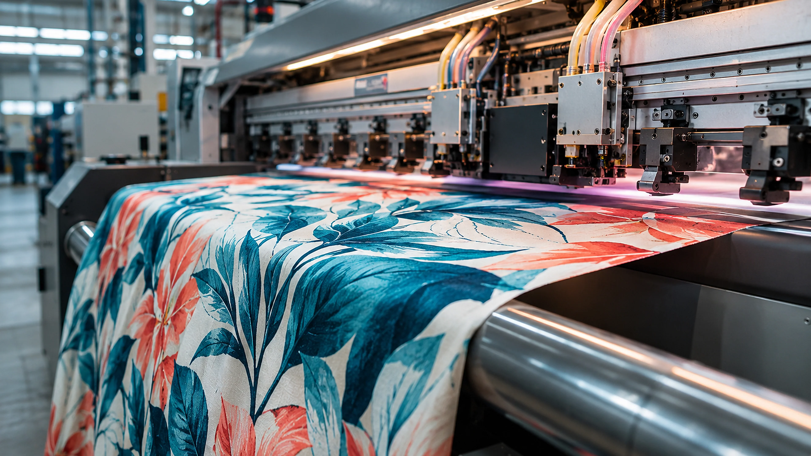
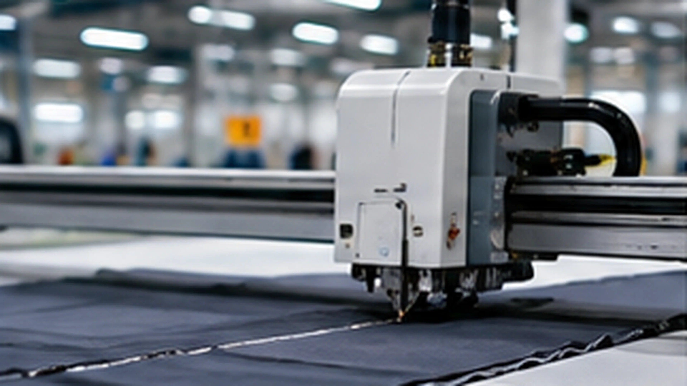

01

PROCESS 01
Knitting
Fabric creation begins here.Our supporting operations include knitting — an essential first step in creating fabric for garments.
An integrated approach from product development to final garment manufacturing.

Our company profile describes garment manufacturing supported by knitting, dyeing and printing operations.
Our supporting operations include knitting — an essential first step in creating fabric for garments.

Dyeing brings colour and character to textile materials as part of IZON’s integrated capabilities.

Printing enables the application of patterns, artwork and surface details to fabric.

Sampling and cutting help translate product concepts into accurate pieces ready for assembly.

Experienced production teams turn prepared components into finished garments.

Quality checks and packing support consistency and readiness for dispatch.
Tell us what you are looking to manufacture and our team can take the conversation forward.
Discuss your requirement